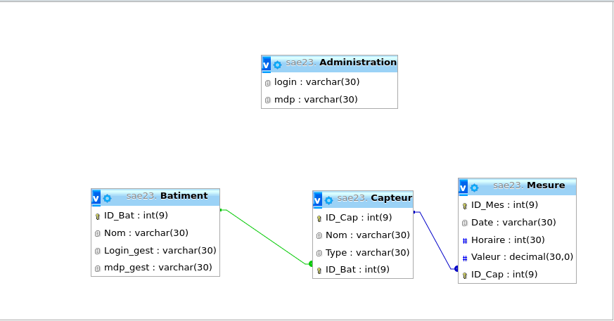

Nous allons vous présenter dans ce site web des données de 4 capteurs divisés dans 2 bâtiments, donc 2 capteurs par bâtiment.
Ce projet a été effectué lors de la SAE 23 en BUT1 Réseaux et Télécommunications à l'IUT de Blagnac.
Nous avons choisi la solution PHP.
Elle consiste à créer une base de données et les faire apparaître dans un site web dynamique.
Pour réaliser cela, en premier nous avons récupéré les données grâce à un script Bash et MQTT, donc grâce au système de souscription à des brokers.
Nous avons ensuite utilisé une base de données MySQL pour stocker les données. Voici une capture du schéma de la base de données :
Pour finir, nous avons un dernier script Bash qui permet de placer les données dans un tableau sur les différentes pages de ce site, grâce à du code en PHP.
En vertu de l'article 6 de la loi n° 2004-575 du 21 juin 2004 pour la confiance dans l'économie numérique, il est précisé aux utilisateurs du site internet http://calmels2.atwebpages.com/TP_SAE14 l'identité des différents intervenants dans le cadre de sa réalisation et de son suivi: Propriétaire du site : Calmels Maxime. Hébergeur : Autreeohost
Calmels Maxime est propriétaire des droits de propriété intellectuelle et détient les droits d’usage sur tous les éléments accessibles sur le site internet, notamment les textes, images, graphismes, logos, vidéos, architecture, icônes et sons. Toute reproduction, représentation, modification, publication, adaptation de tout ou partie des éléments du site, quel que soit le moyen ou le procédé utilisé, est interdite, sauf autorisation écrite préalable du propiétaire. Toute exploitation non autorisée du site ou de l’un quelconque des éléments qu’il contient sera considérée comme constitutive d’une contrefaçon et poursuivie conformément aux dispositions des articles L.335-2 et suivants du Code de Propriété Intellectuelle.